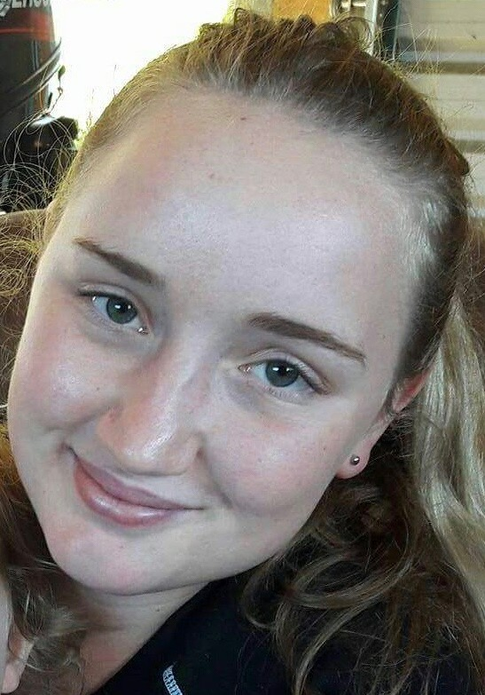

Sarah Wenham, 2017
Born in Morrinsville, New Zealand, in 1999 Sarah grew up on a dairy farm for her whole childhood. Her father being a Dairy farmer and mother, an AI technician she was constantly on the farm helping or playing around with her three older siblings. Sarah attended Kaihere Primary School for her first eight years of education which was a small country town with around 60 students. From there on she attended Hauraki Plains College, around 700 students, where she achieved her Junior Diploma, NCEA Levels one, two and three with excellence. Her love for art and design came from graphics and art in year 9, and from her older sister who was studying jewellery design at the time. This all influenced her to attend Massey University in Wellington after graduation where she is currently studying a bachelor of Visual Communication Design with honours. During the time in which she was in primary school her older brothers and sister attended brownies, guides and scouts which she was taken along to due to her mother and father being leaders. During her time here she enjoyed the activities and joined when she was old enough to do so. Going from Brownies to Scouts and then back to Guides when Ngatea Scouts closed down she achieved her Guides Aotearoa but didn’t stop there. During her time at college she was part of the Morrinsville Venturer Unit for a number of years where she did numerous hours of service, sport and skills, causing her not only to achieve her bronze, silver and gold Duke of Edinburgh but also her Queen Scout award, which is known to be the highest youth award in New Zealand.
Sarah Wenham, 2017